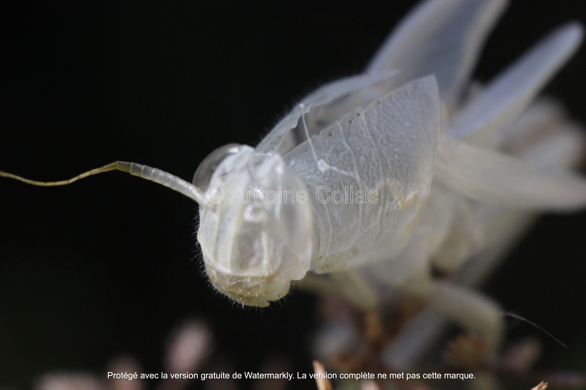
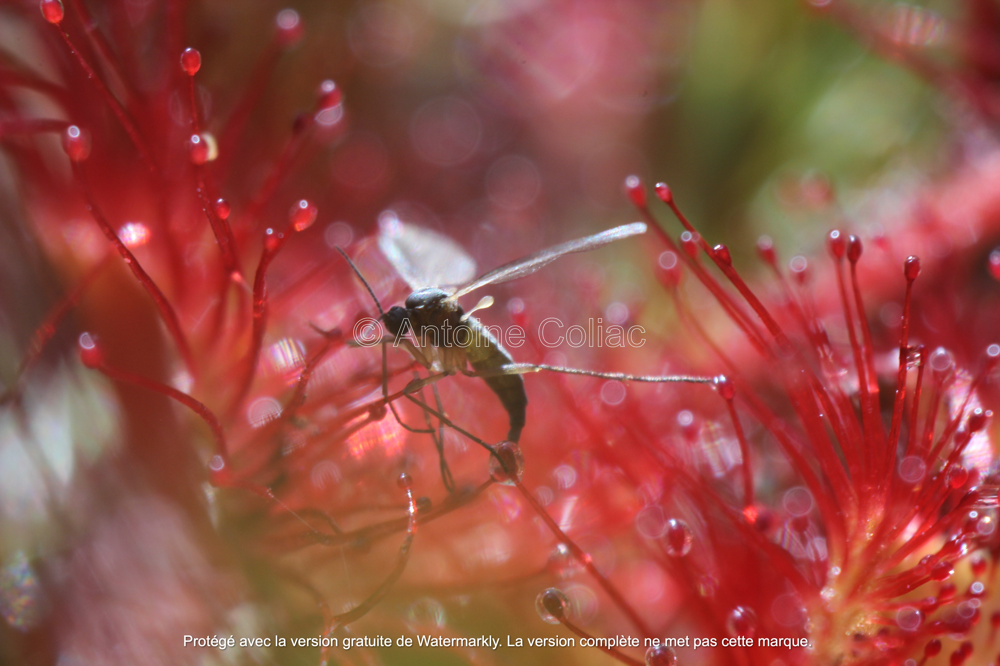
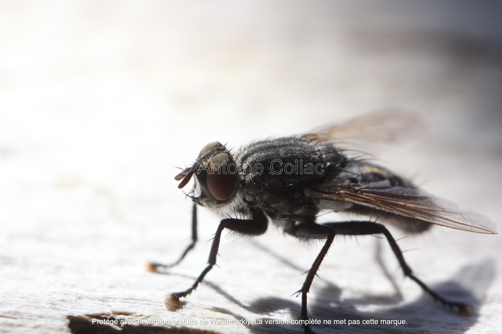
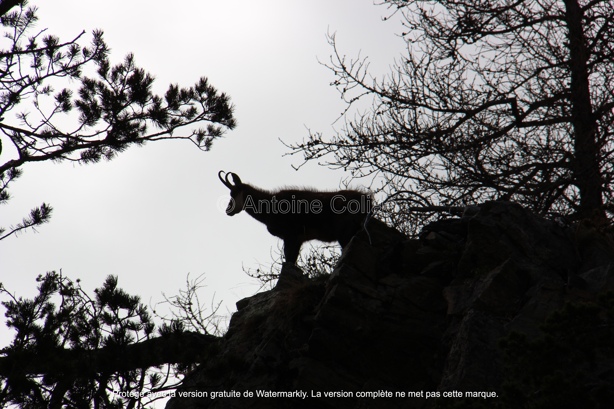
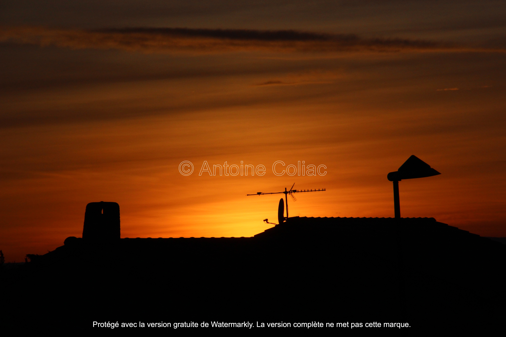
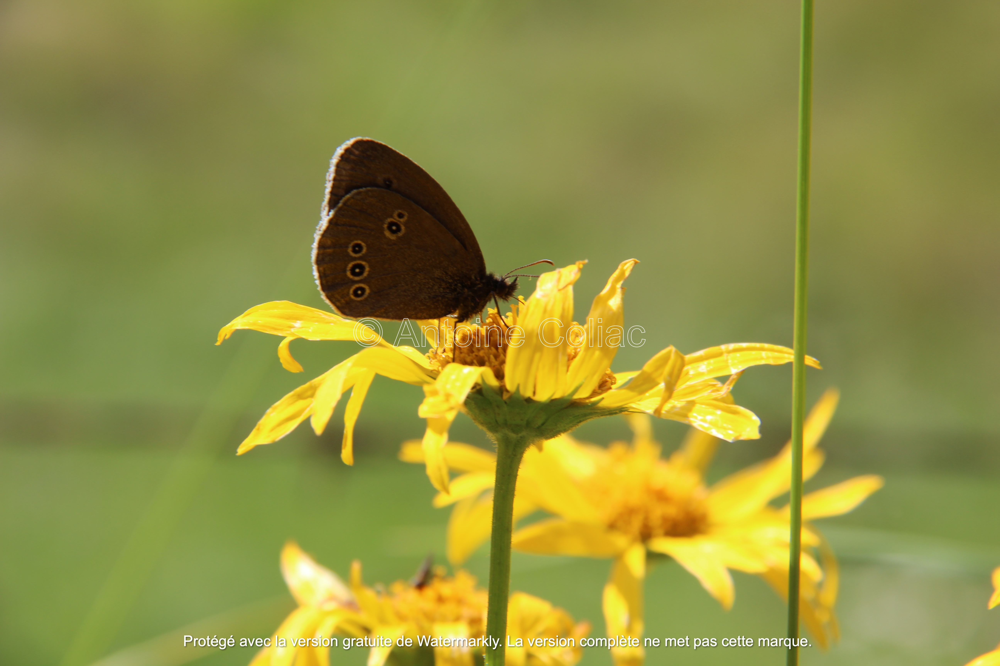
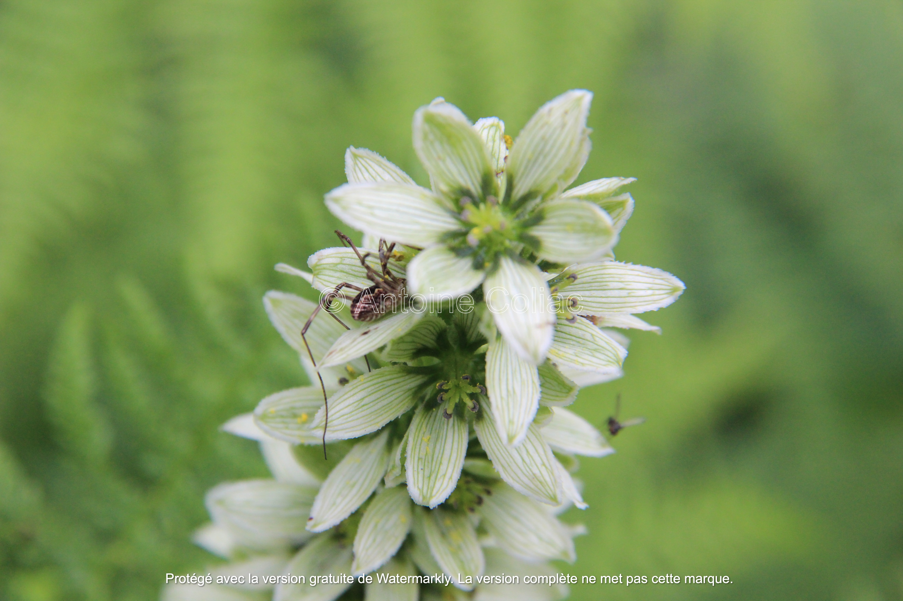

La curiosité au cœur de la photographie
Pour une meilleure expérience, mettez-vous en plein écran (F11) et utilisez les flèches du clavier
Toutes les photographies sont ©Antoine Coliac
Moment unique, inattendu, mystérieux…

Savoir se retirer en soi, quel voyage !
Où trouves-tu la paix, créature sans âge ?

Porterais-tu la terre dans ta sérénité ?
L'art et la force dans ta persévérance ?

La quiétude de ta discrète noblesse

Éclaire, pas à pas, un chemin de Vie précieux

Tout imprégné d'une impalpable vérité…

Écharpes de nues reliant ciel et terre

Imaginaire et surréel
Un souffle, en suspens, éternel
Dans l'espace et le temps, tissé, est mystère

À travers mille couleurs

J'erre.
Frôlant le sol
Le regard vagabond

Mes pas sont Liberté.
Le soleil est ma source

L'arbre de la vie se dessine.

Il trace mon chemin
Je vis.

Envoûtant le silence de sa sérénité

L'âme d'un sous-bois bercée de plénitude

Révèle, infinie, la voix de la Nature

Aux pierres coiffées de dentelles de verdure

Les percées de lumière offrent leur quiétude

Immense enchantement en son intimité

Mystérieuse grandeur

Inidicible bonheur